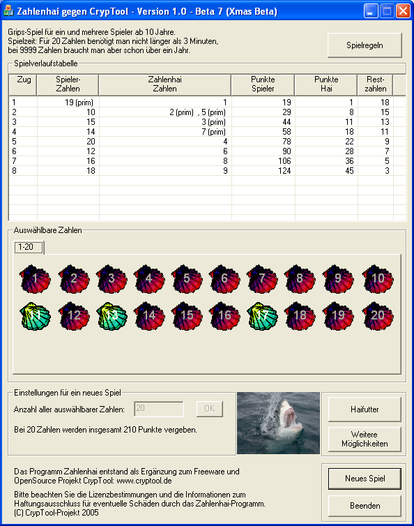
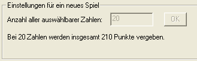
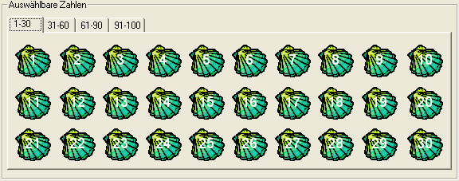
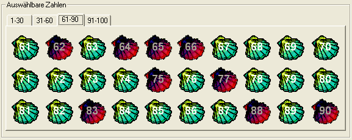
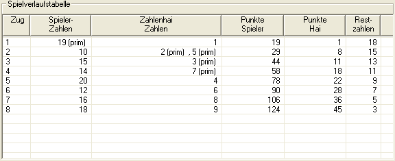
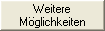
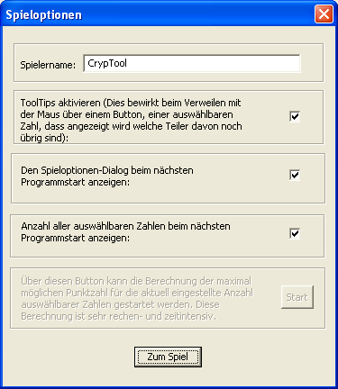
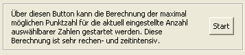
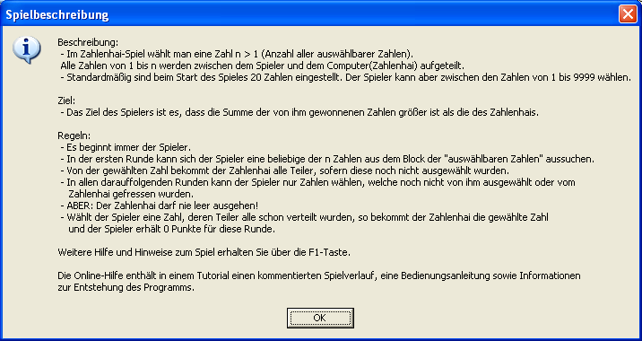

In the following paragraph the handling of the Number Shark game will be described with the game dialog.
The game starts once you picked a number -- the Number Shark gets the factors of this number. This number and their factors will be deactivated in the shell square, you can’t use them any longer.
Once you and the Number Shark completed one round the next steps are:
You take a number and the Number Shark gets the factors, until all numbers are used.
Your goal is that the sum of your numbers is higher than the sum the Number Shark has eaten.
The Number Shark game teaches playfully the handling with factors and prime numbers and was originally designed for school kids.
Always when a prime number was chosen, no matter from whom, "(prime)" will be written behind this number in the game progress list to show that this number is a prime number.

In the group box "Settings for a new game" you can select with how many numbers you want to play the game. This decision needs to be confirmed by the "OK" button or the Enter key on your keyboard. When you first start the game this field contains the value 20.
If you press "New game" the inserted number will not be set back to 20. In the "Game Options" you can decide if the program should remember this number for the next start.

If you press the "OK"-button, the number store will be filled with shells which you can use as normal buttons. You only can see 30 shells at once in the block. If you choose a number higher than 30, tabs will appear above the block via which you can see all other shells. With the tabulator and the arrow keys on your keyboard, you can move through the numbers and select them with the Enter key. For a better readability, all numbers are labelled in yellow. At the beginning of the game, all shells are green, which means, that you can select anyone of it.

Every number you choose, and every factor of this number, will be colored in red to show you that you cannot use this number any longer.

The game progress list shows you the current score. The list can be divided into six rows.

| The button "Shark Food" only gets active if there are numbers in the game which have no more real factors and at the same time are not a factor of any other number. If you press this button, all these numbers will be given to the Number Shark, because sooner or later he definitely gets these numbers. |
|
|
|
|  | With the "More options" button you get access to the options screen, which you also saw at the beginning of the game. |
In the options dialog you have the following possibilities:

Via the button "Start" the program can show you how many points you can get with your chosen count of numbers. Because the calculations take very long, the values for numbers < 22 has already been done and the values are saved in the program. The calculation of the number 23 takes about 80 days on a 3GHz PC. Beside the maximum possible points, you also get one way on which you can achieve this score, which means that the program shows you in which order you should take which numbers. Sometimes the order can be changed in some parts and you will also achieve the highest score. And you get a hint with which number you need to start the game to get as many points as possible.
Via the button "Game rules" you get a short summary of the game rules.

You can find more information about the development of the Number Shark game here
By legal reasons we explicitly have to point at the terms of licence and the information regarding non-liability.